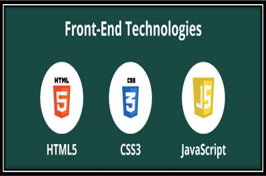
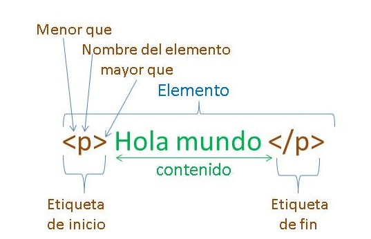
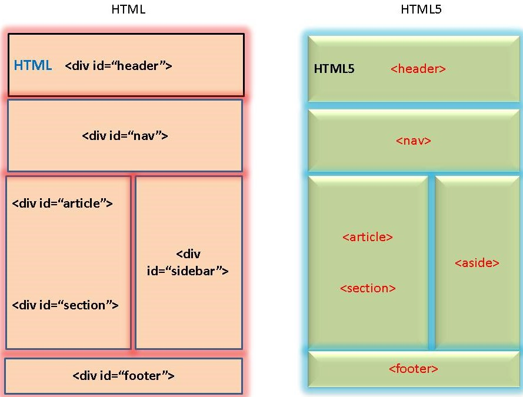

Un desarrollador Front End debe tener conocimiento sobre HTML, CSS y JavaScript
y ser capaz de utilizar algunos frameworks o librerías para crear todo tipo de interfaces de usuarios.
React, Redux, Angular, Bootstrap, Foundation, LESS, Sass, Stylus y PostCSS son algunos de ellos.
El desarrollo web front-end: se refiere a la práctica de producir HTML, CSS y JavaScript.
Estos tres elementos se encargan de dar forma a la parte frontal de un sitio web o aplicación.
Esto incluye los fondos, colores, texto, animaciones o efectos.
Precisamente de ahí proviene el nombre de «desarrollo del lado del cliente»,
pues con el front-end se puede construir por completo lo que los usuarios
perciben al explorar un sitio y con el que pueden interactuar.

HTML, CSS, JavaScript.
¿Para qué sirve el Front-End?
El front-end sirve para realizar la interfaz de un sitio web, desde su estructura hasta los estilos,
como pueden ser la definición de los colores, texturas, tipografías, secciones, entre otros.
Su uso es determinante para que el usuario tenga una buena experiencia dentro del sitio o aplicación.
Elementos del front-end
Estructuras de navegación. Este elemento se refiere al orden en que se organizan las diferentes páginas
de un sitio web y a los componentes que se vinculan entre sí para realizar diferentes funciones dentro del sitio.
Layout. También nombrado como diseño de página, se refiere a todos los componentes de la página web, por ejemplo:
ubicación del menú, botones, footer; todo lo necesario para que un sitio sea útil y fácil de navegar.
Contenido web. Todo aquello que brinde información relevante o interesante para los usuarios.
Es importante destacar que el contenido no tiene que ser necesariamente texto, puede incluir sonido o materiales interactivos.
Imágenes. Todos los recursos visuales ayudan a aumentar el interés de los usuarios. Esto también puede incluir
videos, animaciones, mapas, gráficas, infografías, GIFs, ilustraciones, diagramas, etc.
Logotipo. Para que un sitio web tenga mayor identidad es vital
que contenga el logotipo que represente a la marca o empresa
Diseño gráfico. Este elemento engloba todo lo relacionado con cómo se ve el sitio web y
su apariencia: colores, formas, tipografías, tamaños, etc.
Ejemplos de aplicación del front-end
Como ya lo mencionamos, el front-end son todos los elementos y componentes visibles para los usuarios,
y utilizan lenguajes de diseño como CSS, HTML y JavaScript. Algunos ejemplos de front-end son los siguientes:
Optimización de motores de búsqueda (SEO).
Accesibilidad (reconocimiento de voz, conversión de texto a voz).
Funcionalidad en todos los navegadores y tamaños de pantalla (computadoras de escritorio,
teléfonos móviles y tablets).
Velocidad (cuanto más rápido cargue el sitio, mejor).
Rendimiento del sitio web por medio de la limpieza del código.
HTML-CSS-JavaScript
¿Qué es HTML?
HTML (Lenguaje de Marcas de Hipertexto, del inglés HyperText Markup Language)
es el componente más básico de la Web. Define el significado y la estructura del contenido web.
Además de HTML, generalmente se utilizan otras tecnologías. Para describir la apariencia-presentación de una página web (CSS)
o la funcionalidad/comportamiento (JavaScript).
"Hipertexto" hace referencia a los enlaces que conectan páginas web entre sí,
ya sea dentro de un único sitio web o entre sitios web. Los enlaces son un aspecto fundamental de la Web.
Al subir contenido a Internet y vincularlo a las páginas creadas por otras personas,
te conviertes en un participante activo en la «World Wide Web» (Red Informática Mundial).
Relación con otras “capas” (lenguajes)
La evolución de estas versiones de HTML junto a la combinación de otras tecnologías (capas)
han ido produciendo páginas webs más interactivas, más visuales, etc.
En la actualidad HTML se utiliza principalmente para otorgar una estructura básica y contenido a nuestra web.
Posteriormente, lo combinaremos con otras capas (lenguajes) como.
CSS (mediante a hojas de estilo) que nos proporcionarán la parte estética y
JavaScript (JS) que otorgará la inteligencia, el dinamismo, la acción, es decir, la funcionalidad.
HTML su relación con W3C
A lo largo del tiempo HTML ha ido evolucionado y eso ha provocado la creación de distintas versiones de HTML.
De realizar estás evoluciones de versiones de HTML, se encarga la World Wide Web Consortium
(más conocida bajo la abreviación W3C) es un consorcio (compañía) internacional que desarrolla los protocolos y
directrices que garantizan el crecimiento a largo plazo del lenguaje HTML.
HTML, como dijimos es un lenguaje de marcas que nos permitirá elaborar páginas web.
HTML utiliza "marcas" para etiquetar texto, imágenes y otro contenido para mostrarlo en un navegador Web.
Las marcas HTML incluyen "elementos" especiales como
<head>, <title>, <body>, <header>, <footer>, <article>, <section>, <p>,
<div>, <span>, <img>, <aside>, <audio>, <canvas>,
<datalist>, <details>, <embed>, <nav>, <output> (en-US),
<progress>, <video>, <ul>, <ol>, <li> y muchos otros.
Las etiquetas (también conocidas bajo el término de TAG)
son las instrucciones que nos permitirán añadir contenido a nuestra web tales como títulos, párrafos, etc.
Tipos de etiquetas (TAGs) HTML
Existen diferentes etiquetas que nos permitirán hacer cosas distintas en nuestros documentos web.
Dentro de las etiquetas/tags tenemos diferentes tipos de etiquetas. Si las clasificamos según su
estructura de etiqueta tenemos dos grandes bloques:
No selft-closing tags: una elemento que tiene las etiquetas de apertura y cierre.
Este tipo de elemento está formado por 3 partes.
Vamos a ver un ejemplo:
Si queremos crear el párrafo en una página web utilizamos la etiqueta p:
<p> Mi primer párrafo </p>
Etiqueta de apertura: <p> → Indica el inicio del párrafo
Contenido: Texto de nuestro párrafo
Etiqueta de cierre: </p> → Indica el cierre de la etiqueta párrafo.
Se diferencia de la etiqueta de inicio por tener una / inmediatamente después de
<

No selft-closing tags (auto cierre):
Son elementos que no requieren una etiqueta de apertura y cierre,
sino únicamente una etiqueta de cierre.
El Self-closing tags es válido en HTML5, pero es requerido el cierre de la etiqueta.
<br>, </br> son lo mismo para el navegador y harán literalmente lo mismo.
Es aconsejable o muy recomendable el coger el hábito de cerrar todas las etiquetas ya que,
si las cerramos todas, es menos que nos dejemos alguna abierta de las no selft-closing.
Importancia de utilizar las etiquetas semánticas de HTML5 correctamente según su valor semántico
Es muy importante utilizar la semántica de las etiquetas correctamente para que cuando el navegador o incluso la araña
que indexa el contenido en Google interprete el código, sea capaz de entender lo mejor posible el contenido que engloba
y cual la relación que tiene con el conjunto de elementos del documento HTML.
Un ejemplo con versiones anteriores a HTML5 utilizaban div (contenedor) para realizar agrupaciones varias etiquetas,
ahora, en HTML5, disponemos de distintas etiquetas sintáticas para indicar si estos contenedores son un footer,
un article, o un menú nav por ejemplo.

HTML sin etiquetas semánticas, HTML5 etiquetas semánticas
HTML-CSS-JavaScript
¿Qué es CSS?
CSS significa hojas de estilo en cascada
CSS describe cómo se deben mostrar los elementos HTML en la pantalla, el papel o en otros medios
CSS ahorra mucho trabajo. Puede controlar el diseño de varias páginas web a la vez
Las hojas de estilo externas se almacenan en archivos CSS
¿Por qué usar CSS?
CSS se usa para definir estilos para sus páginas web, incluidas el diseño,
el diseño y las variaciones en la visualización para diferentes dispositivos y tamaños de pantalla.
CSS resolvió un gran problema
HTML NUNCA tuvo la intención de contener etiquetas para formatear una página web.
HTML fue creado para describir el contenido de una página web, como: <h1> Este es un encabezado </h1> <p> Esto es un párrafo. <p>
Cuando se agregaron etiquetas como <font> y atributos de color a la
especificación HTML 3.2, comenzó una pesadilla para los desarrolladores web.( front-end)
El desarrollo de grandes sitios web, donde se añadía información de fuentes y colores a cada página,
se convirtió en un proceso largo y costoso.
Para resolver este problema, el World Wide Web Consortium (W3C) creó CSS.
¡CSS eliminó el formato de estilo de la página HTML!
¡CSS ahorra mucho trabajo!
Las definiciones de estilo normalmente se guardan en archivos .css externos.
¡Con un archivo de hoja de estilo externo, puede cambiar el aspecto de un sitio web
completo cambiando solo un archivo
HTML-CSS-JavaScript
¿Qué es JavaScript?
JavaScript (JS) es un lenguaje de programación ligero, interpretado, o compilado justo-a-tiempo (just-in-time)
con funciones de primera clase. Si bien es más conocido como un lenguaje de scripting (secuencias de comandos)
para páginas web, y es usado en muchos entornos fuera del navegador, tal como Node.js, Apache CouchDB y
Adobe Acrobat JavaScript es un lenguaje de programación basada en prototipos, multiparadigma, de un solo hilo,
dinámico, con soporte para programación orientada a objetos, imperativa y declarativa
(por ejemplo programación funcional).
JavaScript se ejecuta en el lado del cliente de la web, y se puede utilizar para estilizar/programar
cómo se comportan las páginas web cuando ocurre un evento. JavaScript es un potente lenguaje de scripts
y fácil de aprender, ampliamente utilizado para controlar el comportamiento de las páginas web.
¿Para qué se utiliza JavaScript?
Anteriormente, las páginas web eran estáticas, similares a las páginas de un libro. Una página estática
mostraba principalmente información en un diseño fijo y no todo aquello que esperamos de un sitio web moderno.
JavaScript surgió como una tecnología del lado del navegador para hacer que las aplicaciones web fueran más dinámicas.
Por medio de JavaScript, los navegadores eran capaces de responder a la interacción de los usuarios
y cambiar la distribución del contenido en la página web.
A medida que el lenguaje evolucionó, los desarrolladores de JavaScript establecieron bibliotecas, marcos y prácticas
de programación y comenzaron a utilizarlo fuera de los navegadores web. En la actualidad, puede utilizar JavaScript
para el desarrollo tanto del lado del cliente como del lado del servidor. En las siguientes subsecciones se presentan
algunos casos de uso comunes:
¿Cómo funciona JavaScript?
Todos los lenguajes de programación funcionan mediante la traducción de sintaxis similar a la del inglés a código
de máquina, que posteriormente el sistema operativo se encarga de ejecutar. JavaScript se clasifica principalmente
como un lenguaje de scripting o interpretado. El código JavaScript es interpretado, es decir, directamente traducido
a código de lenguaje de máquina subyacente mediante un motor de JavaScript. En el caso de otros lenguajes de
programación, un compilador se encarga de compilar todo el código en código de máquina en un paso diferente.
En consecuencia, todos los lenguajes de scripts son lenguajes de programación, pero no todos los lenguajes
de programación son lenguajes de scripts.
Motor de JavaScript
Un motor JavaScript es un programa de computación que ejecuta código JavaScript. Los primeros motores de JavaScript
eran verdaderos intérpretes, pero todos los motores modernos utilizan el método justo a tiempo o la compilación en
tiempo de ejecución para mejorar el rendimiento.
JavaScript del lado del cliente
JavaScript del cliente se refiere a la forma en que JavaScript funciona en el navegador. En este caso, el motor
de JavaScript está dentro del código del navegador. Todos los principales navegadores web incluyen sus propios
motores de JavaScript incorporados.
Los desarrolladores de aplicaciones web escriben código JavaScript con diferentes funciones asociadas a varios
eventos, como hacer clic con el ratón o situar el ratón sobre un elemento. Estas funciones realizan cambios en HTML
y CSS.
A continuación, se muestra una perspectiva general del funcionamiento de JavaScript del lado del cliente:
El navegador carga una página web cuando recibe una visita.
Durante la carga, el navegador convierte la página y todos sus elementos, como los botones, las etiquetas y
los cuadros desplegables, en una estructura de datos denominada modelo de objetos del documento (DOM).
El motor JavaScript del navegador convierte el código JavaScript en código intermedio. Se trata de un
código intermediario entre la sintaxis de JavaScript y la máquina.
Diferentes eventos, como hacer clic con el ratón en un botón, desencadenan la ejecución del bloque de código
JavaScript asociado. Posteriormente, el motor interpreta el código intermedio y realiza cambios en el DOM.
El navegador muestra el nuevo DOM.
HTML-CSS-Javascript
HTML, CSS y JavaScript: las mejores amigas
La combinación de estás 3 tecnologías (HTML, CSS y JavaScript) es la combinación de tecnologías más sencilla y
famosa en el lado del cliente (en el navegador sin visitar un servidor) que todo Front End (desarrollador web)
deberían de conocer imprescindiblemente.
Eso no significa que no podamos utilizar otra combinación de capas (tecnologías)
como BootStrap, Sass, JQuery, etc. Pero estás 3 tecnologías (HTML, CSS y JS)
son el punto de inicio en el mundo del desarrollo web.
En el caso de HTML, CSS y JS vamos a ver unas imágenes a modo de ejemplo
para entender mejor la funcionalidad que realiza cada una de las capas
Conclusión: Esto es una pequeña Introducción. Te animo fuertemente a leer los siguientes artículos.
Espero que este artículo te haya ayudado. Gracias. ¡Feliz Programación!.